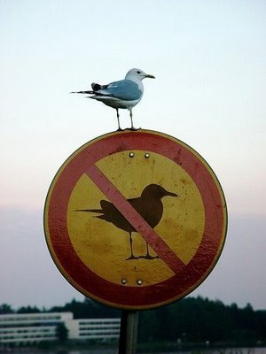
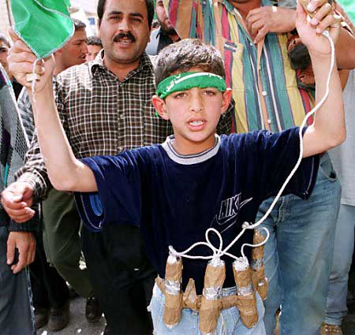

katıksız barış üzerine
İsrail’in, kendilerine ‘barış eylemcileri’ diyen bir yardım filosundaki gemileri;
– askeri yöntemler kullanarak basması ve sonucunda el koyması,
– bir çok kişiyi yaralaması,
– hatta öldürmesi,
– bu eylemini kendi sularından çok uzakta uluslararası sularda yapıyor olması,
kabul edilebilir bir durum olamaz. Sadece İsrail’in kendisini haklı gördüğü bu durum ile ilgili olarak sanıyorum bu yazıyı okuyan herkesin bir fikri vardır. Ana akım medya, alternatif medya, sağcılar, solcular , dinciler, yeşiller, ekolojistler v.s herkes bu müdahaleye karşı tavır koymuş durumda.Ve ne yazık ki İsrail devleti dışında kimse bu durumu onaylamıyor.
Biraz dikkat edersek, hiç bir ülke zaten ‘Saldırı Bakanlığı’ adı altında bir bakanlık kurmadığını, hepsinin Savunma Bakanlığı adı altında faaliyet gösterdiğini görebiliriz. Türkiye gibi zorunlu askerliğin olduğu ülkelerde, devlet, vatandaşlarının dini, vicdani hiç bir kaygısını gözetmeksizin askere çağırır. Gitmeyenleri hapse atar. Dolayısıyla bu topraklarda ne kadar pasifist, şiddet karşıtı olursan ol ‘vatan toprağı kutsal’ olduğu ve ‘uğruna öldürmek, ölmek’ normal sayıldığı için askerlik kurumu senin belli bir oranda güç kullanmana izin verir. Ama bunu bir komşuna ya da evine giren bir hırsıza yaptığın zaman çeşitli yaptırımlarla karşı karşıya kalırsın.
Şiddet, zaten hiç bir toplumda onaylanmıyor. Kabul görmüyor. Bir şekilde şiddet uygulayana karşı her toplumda karşı bir cezalandırma var. Bu her toplumda böyle. Yani siz birisini dövseniz ve bu eylemi İsrail’de de, Türkiye’de ya da herhangi bir ülke de yapsanız, sonucunda ya para cezası ya da hapis cezası alırsınız. Bu genel yaklaşım bazen tartışılır ama hep şiddete başvuran cezalandırılır.
Sevgili Prenses; Şimdi sana esasında şiddetin yeri geldiğinde kullanılmak üzere bir kenarda tutulduğunu, kimilerine göre o kadar da kötü birşey olmayabileceğini ve esasında belli kesimler tarafından bir yaptırım amacı ile kullanıldığını, yani ÇİFTE STANDARTın ne demek olduğunu anlatmaya çalışacağım. Amacım biraz kafanı karıştırmak. Kafandaki doğruları sorgulatmak ve sinirlendirmek. Ama sinirlendirirken nefret ettirmek değil, düşündürmek.
Yani burada şöyle bir çelişki var; Diyelim İsrail ordusunda askersin. Bu yardım konvoyuna yapılacak baskında yer alan kişilerden de birisisin. Askerliğin kuralları gereği her neye inanırsan inan gıkını bile çıkaramazsın. Kendi kişiliğini ayaklar altına alır ve devletin adına bu cinayetleri işlersin. Bu durumu fazla önemsemiyorsan tabii işin biraz daha kolay olmakla beraber, terhis olduktan sonra gazeteleri okuduğunda yaptığının ne kadar yanlış olduğunu görebilirsin. Aynı Hiroşima’ya bombayı attıktan sonra akıl hastanesine yatıp sonrasında orada ölen asker gibi. Şiddet uygulama hakkı sadece kolluk kuvvetlerine gerektiğinde belli odaklara hizmet edilmesi amacıyla veriliyor. Bunun meşruluğu ise sonsuz bir tartışmayı beraberinde getiriyor. İsrail devleti kendi varlığını tehlike altında hissettiğinden adı ‘yardım konvoyu’ olan gemiye karasularında bile değilken böyle ölümcül bir müdahale de bulunması, benim için İsrail’in çaresizliğini, zavallığını gösterirken, bir yandan da öteki tarafa yani ‘yardım’ eden kimi mazlumların bulunduğu gemideki şiddet potansiyeline gözüm kayıyor. Ve benim yazım, kimi sorularla beraber işte bu noktada başlıyor.
İnsani Yardım adı altında ablukadaki bir bölgeye gidiyor olanların hepsi sırf saldırıya uğradıkları için masum olabilir mi? Gerçekten barışın ne demek olduğunu, barışa inanmanın ne kadar zor olabileceğini biliyorlar mı? İsrail’in askeri konularda ne kadar sert olduğu bilinirken bu durumla başa çıkabilmek için kendilerini BARIŞ adına ‘savaş’maya, hazırlar mıydı? Amaç yardım malzemelerini Gazze’ye ulaştırmak mıydı yoksa ‘şehit’ vererek dünya kamuoyunun desteğini mi çekmekti? Şehit olmakla övünmek ve bunu bir madalya gibi boynunda taşımanın bir sonraki nesilllere yapacağı etkiler düşünülüyor mu?
Bu sorular bir suçlamada bulunmak için ortaya çıkmıyor. Suçlamak, yargılamak ve cezalandırmak zaten alışılagelmiş yöntem. Burada bilerek ya da bilmeyerek yapılan bir çiftte standartı ortaya koymak istiyorum.
Şöyle ki;
İlk 2-3 gün boyunca çıkan haberlerde yorumlarda, başbakanından ailelere kadar herkes İNTİKAM ÇIĞLIKLARI attı. Tehditler ise gırla gitti.
Peki tehditlerle dolu bir dünyada şiddetsiz, gerçek BARIŞ nasıl vücut bulacak? Sürekli herkes birbirini suçluyor, intikam yeminleri ve sonu bitmek bilmeyen silah sesleriyle çocukluğumdan beri o kanıksadığım bu olaylara artık şaşıramıyorum. Siz şaşırıyor musunuz?
Barış kelimesi o kadar kirli bir hal aldı ki artık yeni bir kelime mi türetmeliyiz acaba? Birleşmiş Milletler’in askerlerden oluşturduğu bir yapıya BARIŞ GÜCÜ demesi ne kadar anlamlı olabilir ki? Aynı şekilde yardım götürmeye giden ve kendilerine ‘BARIŞ EYLEMCİLERİ’ diyen bir grubun, komandoları kendi yöntemleriyle saldırarak karşılık vermeye kalkması, itmesi, kakması ellerinde bıçaklarla karşılaması sonucunda BARIŞ mümkün olabilir mi? Bu noktada her zaman duyduğumuz ‘ne yani? karşılık vermeseler miydi?’ diye sormadan önce düşünün. ‘Karşılık vermeselerdi?’ ne olurdu? Ölürler miydi? Eh zaten ölen öldü. Bu zaten her şiddet olayında yaşanan bir şey ve sonuçları ortada. Madem ölmeyi, yaralanmayı göze alarak oraya gidiyorsunuz ve kendinize ‘Barış Eylemcisi’ diyorsunuz; bir kere de gerçekten barışçıl olup, şehit olmakla gururlanmak yerine yaşamayı ve yaşatmayı savunarak mücadele edin. Sonuçta hepimiz zaten öleceğiz. Ama ya arkada bıraktılarımız? Onlara ne bırakacağız? Şehit olmanın verdiği gurur dışında?
İşte İHH başkanı Bülent Yıldırım’ın Türkiye’ye gelince yaptığı basın açıklamasından bu yazının amacına uygun olarak ayıkladıklarım;
‘Askerlere yaptığımız meşru müdafaa’
’10 İsrail askerini etkisiz hale getirdik!’
‘…Hani teslim olduk değil mi? Ellerimizi kaldırdık, hep beraber. Kadınlar olmasa biz yine teslim olmazdık. Bütün arkadaşlarımı kutluyorum. Bir tanesi geri adım atmadı…’
‘Silahlarını aldık. Biz silahlarını kullansak, yine dünyada hukuk nezdinde meşru müdafaa olacaktı. Çünkü hukukta, sana saldıranın silahını alıp, onu vursan suçsuzsun. Biz buna rağmen, arkadaşlara dedik ki şehit olacağız. Ama görüntülere silah kullanan konumda düşmeyeceğiz. Bu kararımızla arkadaşlarımız şahadeti kabul etti. Biz onlardan aldığımız silahların hepsini denize attık.’
Mücadele her zaman düşman tarafı döverek, öldürerek, elinden silahını alarak kazanılmadı tarihte. Pasifizmin, sivil itaatsizliğin kazandırdığı bir çok kazanım var hayatta. Bunları artık görmek zorundayız. Yoksa bu çatışmalar hiçbir zaman bitmeyecek. Bülent Bey’in seçeneklerinden biri olan ‘gerekirse şehit olana kadar dövüşmek’ sadece bu durumdaki bir gemiden daha çok şehit çıkmasına neden olurdu. Ayrıca böyle bir tutum gücün kendisine geçtiğinde aynı şeyleri yapmayacağının garantisini de vermiyor. Doğrudan kendisine değil ama bu örnekten yola çıkarak, Gazze’de yaşayanlar kadar İsrail’in de hassasiyetlerini anlamak ve gözetmek zorundayız. Bir toplumu bu kadar şiddete boğan ve korku içinde yaşamaya iten etkenler nedir? Ve bunların kaçta kaçı bizden kaynaklanıyor?


{kind=link}
{kind=link}
Deniz, benimde uzerine dusundugum ve bir cikis yolu bulmadigim konular uzerine yazmissin eline saglik. O kadar karmasik parametreler var ki isin icinde her hangi bir yerinden tutup baska bir yere varirsin, ama baska birisi de herhangi baska bir yerinden tutup bam baska bir yere varabilir. Soyle aklima gelen hepimizin bildigi bir biriyle baglantili parametreleri siralayim once:
-Din
-Taraflar arasinda dogan catisma
-Israil’in ic guvenligi ve bunu silah yoluyla saglama cabasi
-Filistinlilerin buna direnisi
-Bolgede cikari olan ulkelerin Filistin’i alttan desteklemesi
-Israil ile ekonomik iliskileri olan Amerika ve Avrupa gibi ulkelerin
uluslararasi arenada sessiz kalisi
-Sorun cozulmedikce Israil’in uyguladigi siddetin dozunu artirmasi
-Gucu azaldikca Filistin’in gerilla ve propaganda mucadelesine sarilmasi
-Gecen zamanin uyguladi baski
Simdi siddetsizligi bu denklemin icinde bir yere yerlestirebiliyorsan helal olsun. Bence de bir yerlerde olmali ama nerede bilmiyorum. Tamam bu filotilla tayfasi oraya Gazze’deki durumu tekrar dunya gundemine tasimak icin gitti, muhtemelen olasi bir askeri operasyonda karsi koymaya da hazirdilar. Israil’de bunu biliyordu. Bile bile de lades dedi gecenin 4.30’un da manyak gibi bir askeri operasyon yaparak.(isteseler kimsenin canina kiymadan da cok rahat elegecirebilirlerdi gemiyi) elemanlar direnmese Israil askerleri sov yapip gemiyi elegecirecek,ertesi gun de propaganda olsun diye ele gecirdikleri yardim malzemelerini kendileri dagitip butun dunyaya bak ben gayet insani davraniyorum tek derdim kendi ic guvenligimi saglamak diycek ve butun dunya da kafa salliyacakti. Ardina da kendi bildigini okumaya devam
edicekti Israil. Yani siddetsiz eylemin boyle bir flotilla cikarmasinda yeri yok, orada son dakkada siddetsiz kalsalardi demek bana bir sey ifade etmiyor, son dakkada siddetsiz kalicak adam boyle bir eyleme hic girismemeli. Siddetsiz eylem en basindan bam baska bir sey olarak kurgulanmali. Mesela, 6 gemiyi ayni anda gondericegine, haftada bir gemi gonder 6 hafta konuyu gundeme tasi. Bu flotilla cikarmasi basindan beri Filistin’deki mucadele yontemi olan Israil’i sivillere karsi orantisiz guc kullanimina itip uluslar arasi arenada haksiz duruma dusurmek uzerine kurulu. Israil’de o ekmege yag bal surmekden hic geri kalmiyor.
Ama flotillayi bir yana birakip hadi bu kadar siddet dolu bir gecmiste siddetsiz bir mucadele yontemi tasarla dersen hic bir fikrim yok. Belki Gazze’deki durumu insanlik dramini videolar yazilar kanaliyla butun dunyaya duyurmaya calisirsin o kadar. (onu zaten yapiyorlar ve ne kadar ise yaradigi tartisilir) Ya da dedigim gibi tek tek gonderirisin gemileri, hepsi tek tek ele gecirilir. Belki ikinci ucuncu gemiden sonra israil’in kafa atar, sen siddet uygulamasan da sana saldirir gemilerin arkasini kesmek icin. Ama abi butun dunyadan kopuk bir enlemde, kimsenin umurunda olucak bir degerin olmadigi topraklarda, batinin destegini almis hayvan gibi guclu bir ulkeyle nasil siddetsiz mucadele edilir hic bir fikrim yok. Gidip biraz Gandhi okuyayim. Ama senin dedigine de katiliyorum, siddetle de bu topraklara baris gelicegine inanmak cok zor. RW’in muhendislerinden birinin degi gibi: Bu sorunun cozumu butun ortadoguyu cimentoyla kaplayip sifirdan yeniden baslamak galiba.
siddetsizligimin tikandigi noktadan selamlar sevgiler…
YAZINI hemen okudum, yine cok guzel yazmıssın
Sayende kendimi prenses gibi hissettim, sanırım bu mektup bana yazılmış! Yani kafamı karıstırdın biraz 🙂 Dediklerinin hepsine katılıyorum, şiddetsiz barışa!
Ama senin de yazdıgın gibi en barıscı gecinenler bile Barıs Gucu gibi harekete ediyor; siddetsizlikten bahseden yok….
ne acı…
yazini okudum. genel olarak seviyorum senin yazilarini. bu yazinda ise anlatmaya calistigin siddetsiz baris ne kadar gercek disi ve tek yanli.korsan bir ülkenin hassasiyetlerini anlama önerin ise acikcasi korkunc. gemideki insanlarin ruh hali ve duruslarina ragmen saldiriyi hakli cikaracak hicbirsey olamaz.isime burnunuzu sokarsaniz olacaklar böyle baslar diye bütün dünyaya gösteri yapan korsan ülke israil insan canina kiyiyor,hangi siddet karsi durusu olacak bu anlamadim.elime silahi alip vurusalim nagralari atmiyorum ama savasin ortasinda, hergün ölüm korkusuyla yasayan ve her gün ölen insana nasil anlatacagiz siddetsiz olmayi. savasacaklar hakli olarak ve bizede insan olarak yanlarinda olmak düsüyor.
merhaba,
Buraya ilk kez birsey yazıyorum, aslında denizin yazısını okuyunca yorum yazdım ama bir sekilde gönderememişim ki yayınlanmadı. Simdi tekrar kafamdakileri toparlamaya çalışacağım.
Israil’in saldırısının hemen ardından şu an benim de içinde bulunduğum Greenpeace gemileri Akdeniz’in ortasında orkinos balıkçılarına eylem yaptı. Yaptı ve inanılmaz bir şiddetle karşılaştı..Videolardan vs izlemişsinizdir belki, bir eylemci kötü yaralandı, botlar batırıldı, bıçaklar çekildi, eylemcilerin canyeleklerinde hala kanca ve bıçak yırtıkları var, vs vs…
http://www.greenpeace.org/turkey/news/greenpeace-eylemcisi-yaralandi-050610
Bunları yaşadıktan sonra bu konu daha da bir aklına takılıyor insanın. İkinci eyleme giderken herkesin gözündeki endişeyi görmemek mümkün değildi (hatta serkan benim bir ara beyin şalterimi kapadığımı iddia ediyor ama…:). Ama bir tek eylemci bile suratlarına bıçak çekildiğinde bile refleks olarak da olsa eliyle bile karşılık vermeye kalkmadı! Bazı görüntülerde bu durum karşısında adamların şamşırdığını görebiliyorsun, ama tabi bir an için!
Şiddete maruz kalan veya yakında yaşayan veya bunu her an bekliyor olmanın endişesi ile yaşayan bir insan/toplum asla sağlıklı olamaz ve düşünemez. Bence israil kendi de bunu yaşıyor ve yaşatıyor..tabi ki yaptığı tek bir kabul edilir hareket yok. Daha o saldırının hemen ardından (tam da bizim ikinci eylem günü) gaza’da 4 dalgıcı şüphelendikleri için vurmuşlar!
Kafese kapatılmış vahşi bir hayvanın korku ve endişe içinde daha da vahşileşmesine benzetiyorum ben bu durumu. Hele bir de arkasında ona bekçilik eden ABD varken ve etrafındaki ”tehdit” olan Arap ülkeleri her nedense bir avuç toprak ve adamla başa çıkamazken bu şiddeti
Aynı balıkçıların tavrı gibi..bizim balıkcılar haberleri görünce söyle yazmıslar bana ‘keske fransızlar hepinizi orada öldürseydi..”…ne insancıl degil mi?
Sonucta bu bir mazeret degil ama gercek…bu korkuyu ne kadar arttırırsan o kadar vahsilesirler. O zaman ses cıkaramayıp sakinleşmelerini mi bekleyecegiz? Gaza’daki insanlık dışı durumu kendi kendilerine anlmalarını mı bekleyecegiz? hayır tabi ki..ama yine şunu anladım ki burada, eğer içinde şiddeti yokedebilirsen, yani şiddetsizliği gerçekten sindirebilirsen aksini yapamıyorsun. Yani israil komandolarını kapı arkasında demir çubukla beklemek mi yoksa pasifliğini anlayabilecekleri bir konumda mı kalmak doğrusu? Bilmiyorum, ama savaşmaya hazırsan savaş olur, savaşmayı reddedersen ya ölürsün ya da savaş olmaz. Bu saldırı ilk hedef olarak bence öldürmek amaclı degildi, eger karsıdan böyle bir tepki olmasaydı. Ama aradaki çizgi çok ince..
Benim hayal edebileceğim bir barış flotillası tamamen şiddetsizliği benimsemiş, bunu açıkça göstermiş, onlarca belki yüzlerce tekne ve geminin israil sınırına dayandığı ve belki de orada sadece beklediği bir hareket ..ta ki gerçek bir uluslararası baskı oluşturulana ve Gaza’ya yardım değil, işgalin kalkması sağlanan dek..zor ama başka türlüsü ancak savaş demektir. Daha önceki gibi.
banu
Myra dahil genel olarak tüm yorumlara katılmakla beraber ‘yanlış anlaşılma’ları düzeltmek zorundayım. Myra’nın dedikleri kesinlikle benim de kaygılarımı taşıyor. Bence de İsrail’in davranışı onaylamak mümkün değil. Öyle anlaşılmış ama yazım da İsrail’in yaptıklarını onayladığımı söylemedim. Tek söylediğim haksızlık eden tarafın nedenlerinin iyi incelenmesi ve onun penceresinden bakmaya çalışmak. Kötülük yapan birini anlamaya çalışmak kesnlikle onun tarafında olduğunuzu göstermez. Çözüm üretmek ancak İsrail’in dertlerinin anlaşılmasıyla olacak. İsrail’in özgürleşmesi ise başta işgal toprakları olmak üzere hepimizin özgürleşmesine neden olacak. Burada bir paradoks var. Ama çocukluğumdan beri tanık olduğum sonsuz şiddet beni böyle düşünmeye itiyor. Biz İsrail’e sürekli yapma diyoruz ama o yapıyor. ‘Neden?’ diye soruyor muyuz?
Öte yandan bu yazı İsrail penceresinden bakmak üzerine değil de, üzerine ‘barış’ yakıştırması yapıp ama esasında ‘şehit’ olmaya gidenlere yazıldı. Ellerinde sapanla komandolara karşı koyup, ölmeden önce cennete gitmeyi marifet sayanlara yazıldı. Benim için gerçek barış öteki dünya da değil burada olursa anlamlı. Yola çıkarken şehit olmayı düstur edinenlerin geride bıraktıkları dünyada ne olup bittiği ile ilgilendikleri yok. Bence büyük bir bencillik yapıp sadece hurileri, dinlerini yaymayı düşünüyorlar.
ben de simdi bu mevzularin ustu ‘tozlanmisken’ okudum deniz’in yazisi. bi tek bisi soylemek geldi icimden yorumlari okuyunca…
o da siddete karsi siddetsizligi dusunurken bunu cok pasif bir yontem olarak kurgulama egiliminde oldugumuz.. oysa ki siddetsiz eylem ve araclar cok daha mudaheleci olabilir lakin mudahele sonucu yarattigi donusum siddetin yikimiyla ortaya cikandan daha az “gorunur” degildir, nereye bakacaginizi biliriseniz…
bu arada flotillalarin siddetsiz olmalari gerekliligi en basindan kurgulandi ve antrenmanlar yapildi, biliyorum cunku antrenorlerden biri isvecte profesorluk yapan benim de savaskarsitlarindan tanidigim biri ve sonrasinda bu konu uzerine tartisma da yaptik. flotillaya katilanlar siddetsizlik egitiminden gectiler… bu ciddi bir ilke olarak konmustu.. lakin olanlari nasil acikliycaz? bu saldirinin turklerin bulundugu gemiye yapilmasini herhalde tesaduf bulmuyorsunuzdur… benim butun bu tartismalar ve sonrasinda olanlar boyunca yikamadigim bir onyargim, saldiriya ugrayan gemideki kisilerin siddetsiz egitim almalarina ragmen kendi inandiklari dogrultusunda bir yontem belirlemis olduklaridir.. bilmiyorum.. onyargi olarak tanimlamayi temkinli buluyorum..
hilal d.